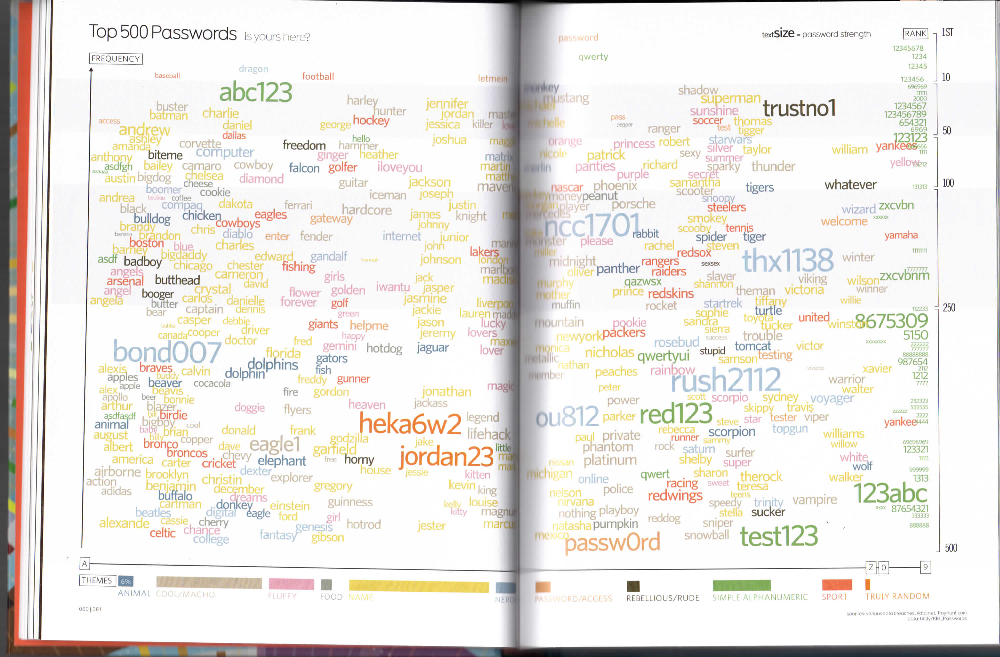
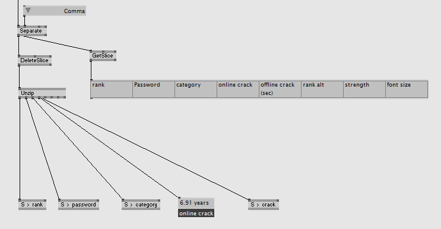
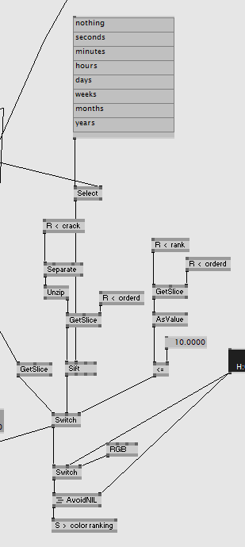

Transforming a static graphic into an interactive desktopinstallation.
The goal was to transform this static informationgraphic into a digital product.
This graphic by XXX cought our attention for several reasons. Due to the rising attacks on servers an computers, it is quit interesting to see which passwords a commonly used an how fast they can be hacked. Another reason was, that it this graphic has a complex structure. The passwords are sorted bei categories as well as the time it takes to hack it. On top of that the data was online availble as spreadsheets. Therefore we had a good startpoint to create a digital product.
We analysed the different Categories and translated them into filteroptions. Instead of adapting to the look of the static graphic, we decided to go for a “coding” look.
The application starts by clicking on the screen and the lists of passwords will be loaded onto the screen to create that common idea of hackers in movies.
Once the users got an overview over the most common passwords. They can explore how fast it is possible to hack them.
One the screen is loaded the useser can explore the different categories.
To create this applicaiton we used VVVV, because it was the easiest and fastet way to create early prototypes as well as the finished version.
The spreadsheets with data will be loaded and sortet by VVVV and sorted in arrays. All words are placed on the screen by an algorithim, that makes sure that no word is placed on an other.
The buttons on the side filter the words accordingly bei the catagory and highlight them in catagorycolor.
Due to short amount of time. The biggest challange was to get the application running. Once the basic structure was working and the expierence worked, it was nice to still have some time to make UI-Design changes.
Working parallel on static and interactive screens makes the development of the user expierence suffiant.